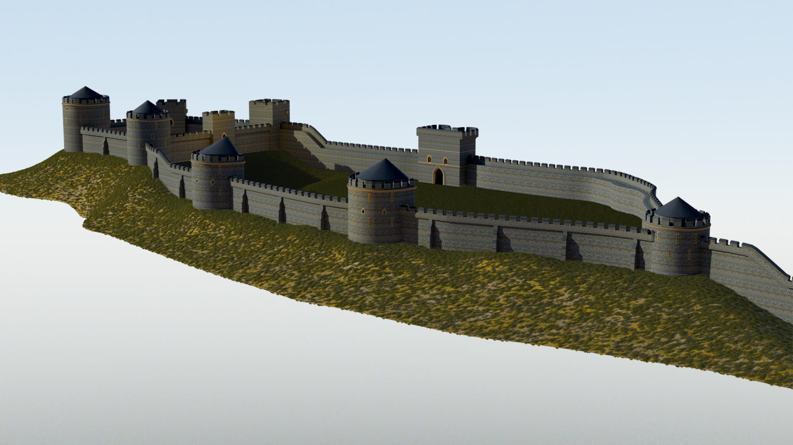
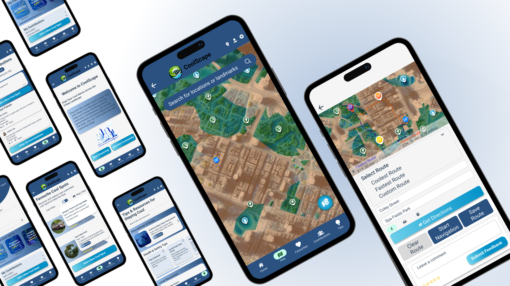
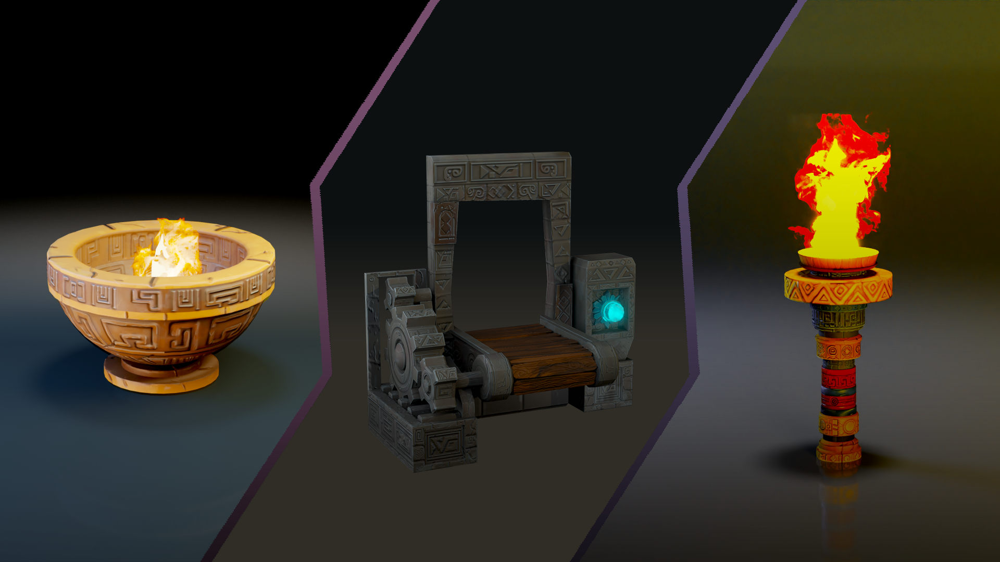
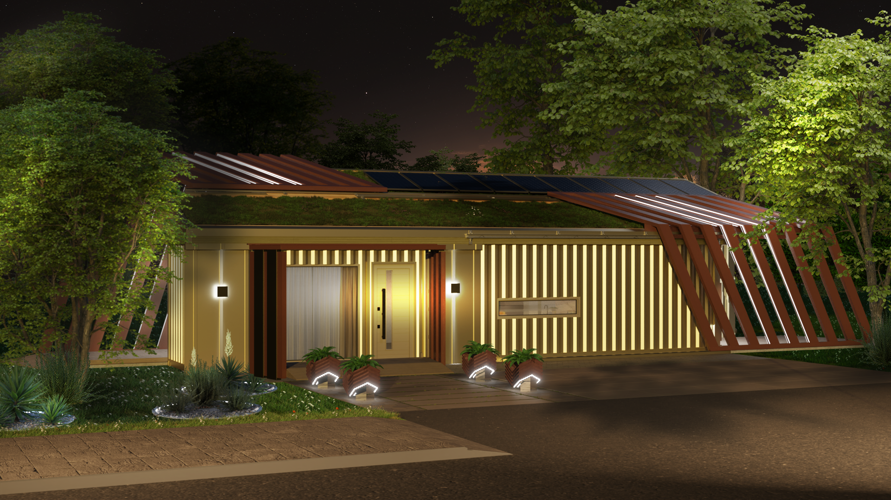
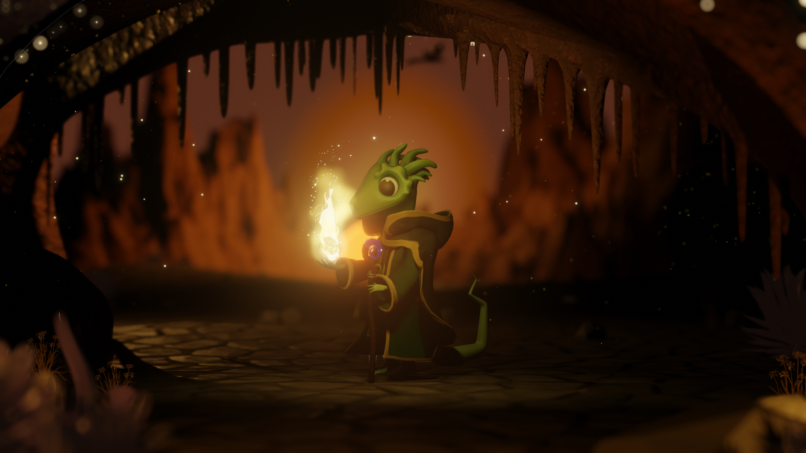
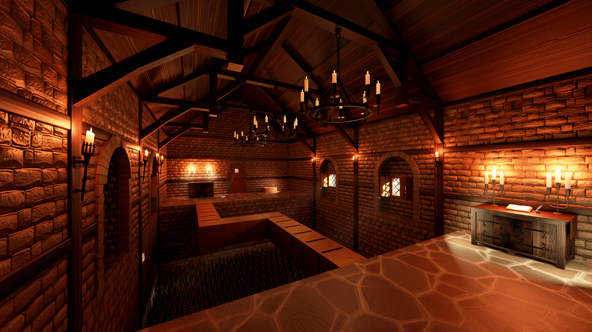
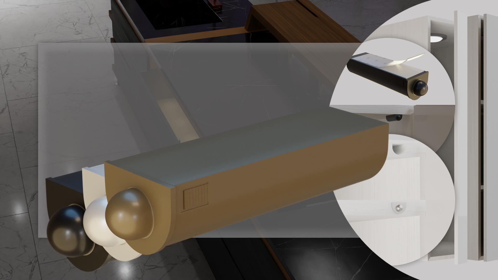
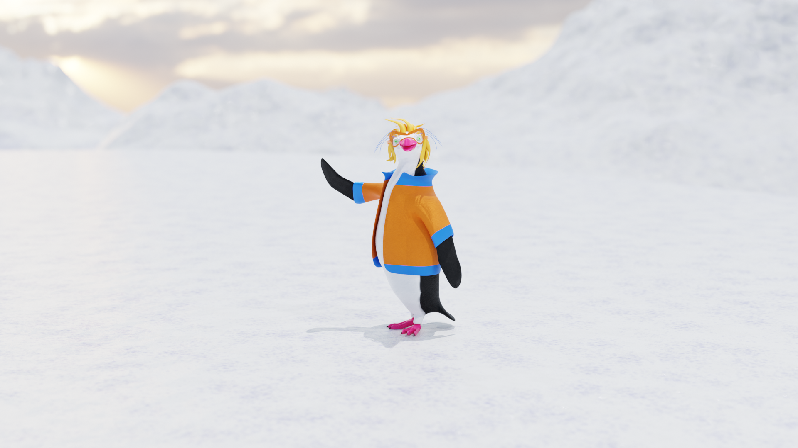
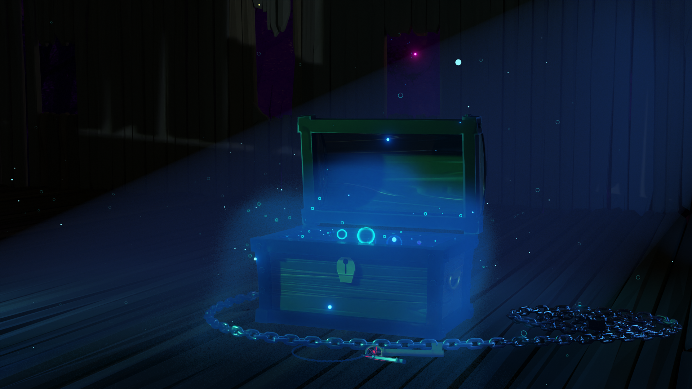
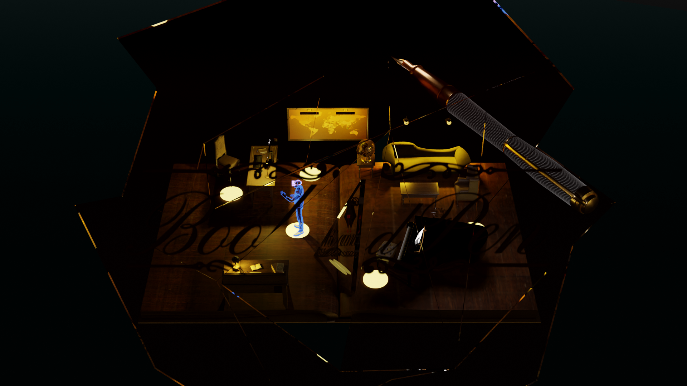

Winchester Castle | A Virtual Revival
Winchester Castle, circa 1400, visualized in a researched and detailed 3D reconstruction.
Winchester University10/2024 - 01/2025

Urban Cool: Heat Mitigation | RSA
Prototype of an interactive urban cooling map app to combat heat island effects in populated areas.
Winchester University10/2024 - 12/2024

Tomebound's Aztec Art | CP2
The feature finishing stage of 'Tomebound'. The meticulous implementation of the game's artistic assets.
Winchester University02/2024 - 05/2024

Social Media Campaign
Effectively promoting my work online, building a strong professional network, and expanding my campaign and community connections
Winchester University02/2024 - 05/2024

New Beginning
Design and develop a solution for a shipping container to show it can be suitable housing for seniors’ citizens, to reduce the housing crisis in the UK.
Winchester University10/2023 - 01/2024

Lizard Druid | CP
A costume model creation for the wizard lizard character in the game 'Tomebound'.
Winchester University10/2023 - 01/2024

Medieval Environment
The creation of a 3D environment with medieval time for the co-op VR gameplay "Split Senses."
Winchester University03/2023 - 05/2023

Home Device
Home Device Prototype Creation
Winchester University02/2023 - 05/2023

Dr Pepi
Character creation and assets implementation for the game ''Earth Ruins''
Winchester University10/2022 - 01/2023

Chest of Souls
The project involves the creation of a low-polygon model that can be seamlessly integrated into game engines.
Winchester University10/2022 - 01/2023

Book & Pen 3D Assets
My skills development in 3d asset creation for the group game project, an interactive experience ''Book & Pen''
Winchester University02/2022 - 05/2022

Web Development
Creation of my digital portfolio website, encompassing design, wireframing, coding, and deployment.
Winchester University10/2021 - 01/2022